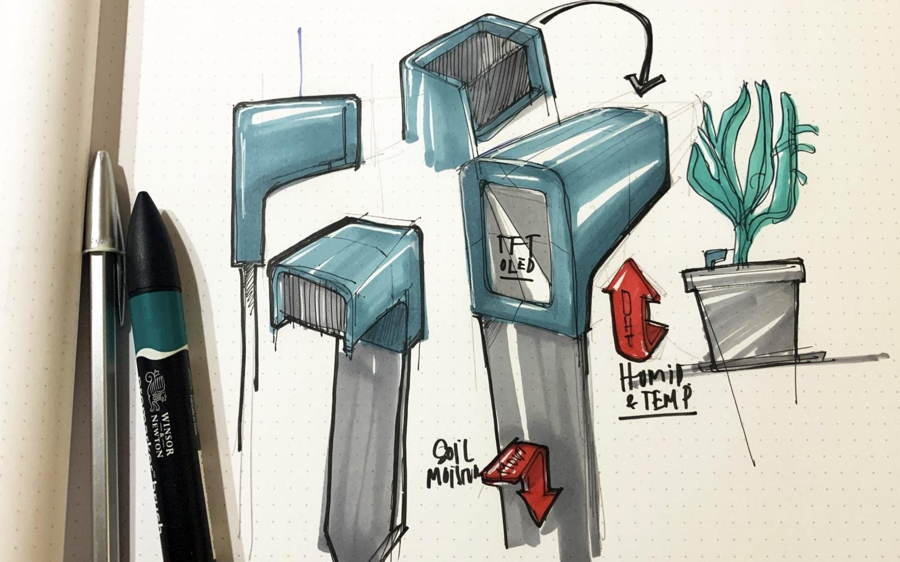

Deixa de ser um bloco de cor e passa a ser papel, como o resto: cabeçalho claro com o nome, bolhas em superfície, só o botão de enviar e as tuas mensagens em azul.
Desktop · rótulo via ::after
≤ 719 px · 52 px
Foco pelo teclado

Sobre imagem · sombra, sem contorno
1 · Boas-vindas
ZZéColega virtual · IA
Olá! Sou o Zé, o teu colega do lado — estou aqui para te ajudar com as matérias das aulas.Sou um colega virtual (IA): só conheço os materiais deste site e posso enganar-me. Só falo com estudantes das turmas. As perguntas ficam registadas sem o teu nome — só em caso de abuso o professor pode saber de quem são.Como te chamas?
O Zé é experimental e pode dar respostas incorretas. É um auxiliar não vinculativo que não substitui a leitura dos documentos e conteúdos fornecidos nesta plataforma.
2 · Turma e cadeira
ZZéColega virtual · IA
Ana
[Pergunta da turma]
[Pergunta da cadeira]
O Zé é experimental e pode dar respostas incorretas. É um auxiliar não vinculativo que não substitui a leitura dos documentos e conteúdos fornecidos nesta plataforma.
3 · Conversa
ZZéDesign de Inovação
Como faço um padrão com um ciclo for?
Usa um for para repetir a mesma forma, mudando a posição em cada volta:for (let i = 0; i < 10; i++) {
ellipse(i * 40, 200, 30);
}Está em Aula 1 — Código Criativo I, nos conceitos introduzidos.
E com tamanhos diferentes?
O Zé é experimental e pode dar respostas incorretas. É um auxiliar não vinculativo que não substitui a leitura dos documentos e conteúdos fornecidos nesta plataforma.